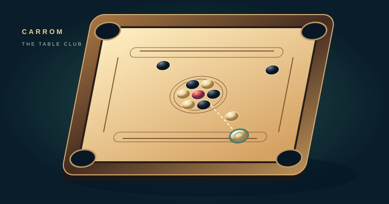

THE CARROM CLUB
كيرم
تصويب محسوب. ضربة نظيفة. والملكة تحتاج تغطية.
طريقة اللعب وقواعد الطاولة
حرّك الدافع على خط البداية. اسحب للخلف من الدافع وأفلته للتسديد، أو اضغط مكان التصويب ثم اضبط القوة واضغط «اضرب».
الأول أبيض والثاني أسود. إدخال حجر من لونك يعطيك ضربة أخرى. حجر الخصم يحسب له. أول من ينهي أحجاره التسعة بعد تغطية الملكة يفوز.
الملكة تحتاج حجرًا من لونك، ثم تغطية بحجر في الضربة نفسها أو التالية. إذا ما غطيتها ترجع للطاولة. إدخال الدافع خطأ يرجّع حجرًا من رصيدك ويسلّم الدور. إذا ما عندك رصيد يبقى جزاء حتى تدخل حجرًا.
بالكيبورد الأسهم تحرك الدافع، A وD للتصويب، Enter للضرب، وP للإيقاف. هذه طاولة سريعة بقواعد مبسّطة لجولة واحدة.
أنتأبيض0 / 9
الكمبيوترأسود0 / 9
حرّك الدافع ثم صوّب
اسحب الدافع للخلف ثم أفلته
CARROM CLUB
خذ وقتك
ضربة الختام